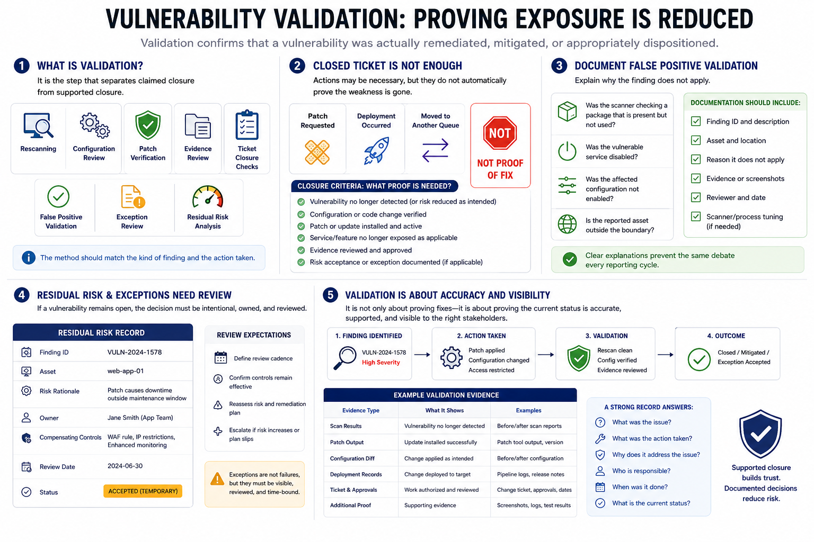

Validation and Closure
Connecting to LMS... Progress: in progress

Narration
Validation confirms that a vulnerability was actually remediated, mitigated, or appropriately dispositioned. It is the step that separates claimed closure from supported closure. Validation may include rescanning, configuration review, patch verification, evidence review, ticket closure checks, false positive validation, exception review, or residual risk analysis. The method should match the kind of finding and the action taken.
A closed ticket is not enough unless exposure has been reduced and evidence supports the decision. Someone can close a ticket because a patch was requested, because a deployment occurred, or because the finding was moved to another queue. Those actions may be necessary, but they do not automatically prove the weakness is gone. Closure criteria should define what proof is needed before the status changes.
False positive validation should be documented carefully. If the team decides a finding does not apply, the record should explain why. Was the scanner checking a package that is present but not used? Was the vulnerable service disabled? Was the affected configuration not enabled? Is the reported asset outside the boundary? A clear explanation prevents the same debate from recurring every reporting cycle.
Residual risk and exceptions also need review. If a vulnerability remains open because remediation is not immediately feasible, the decision should identify the owner, risk rationale, compensating controls, and review expectations. Validation is not only about proving fixes. It is also about proving that the current status is accurate, supported, and visible to the right stakeholders.